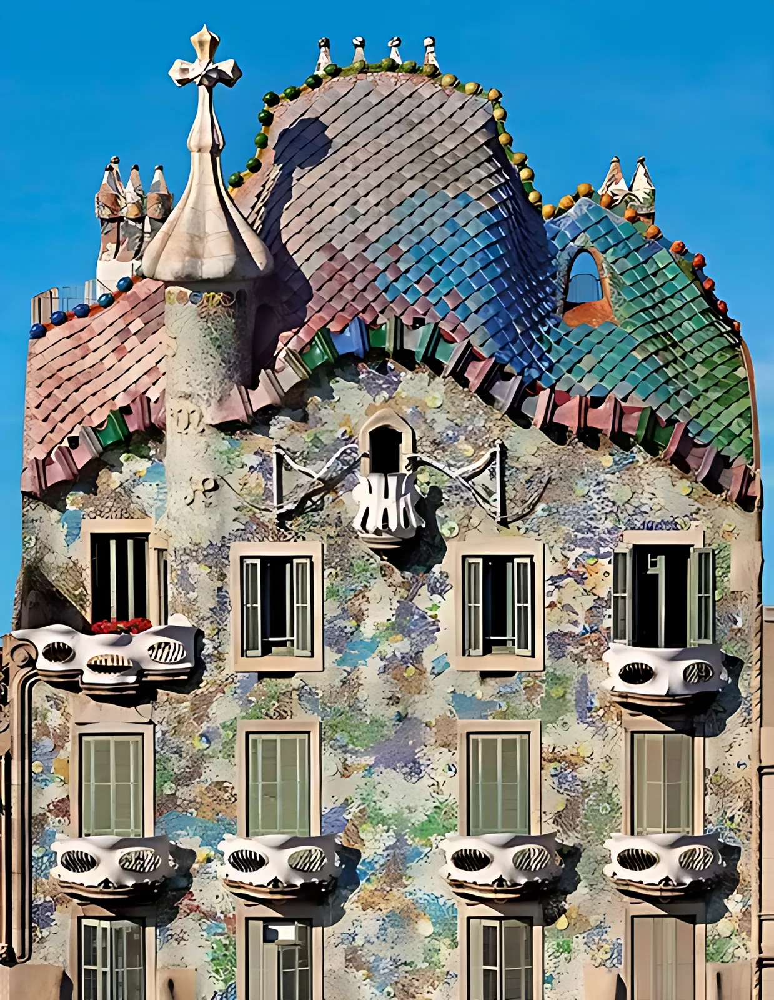
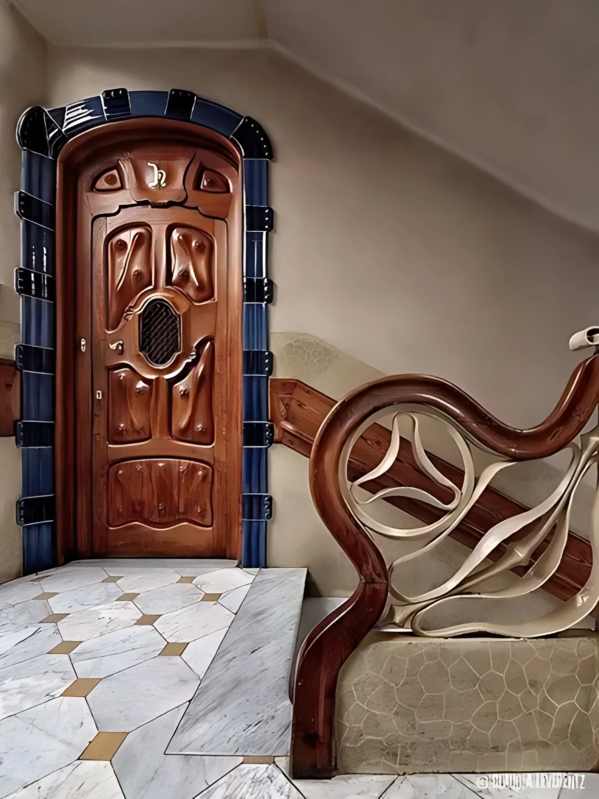
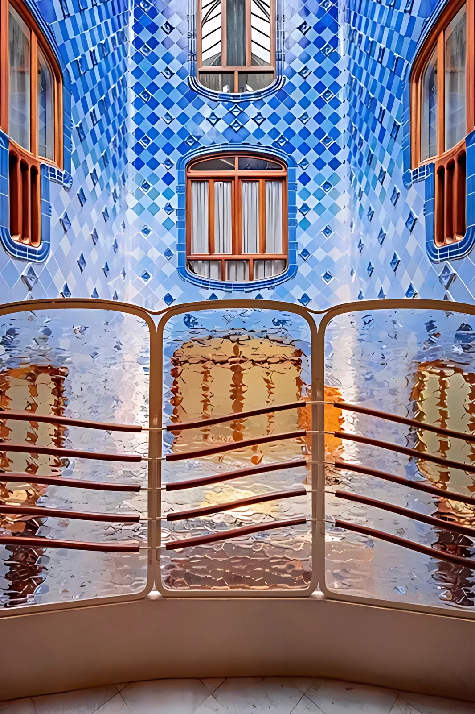
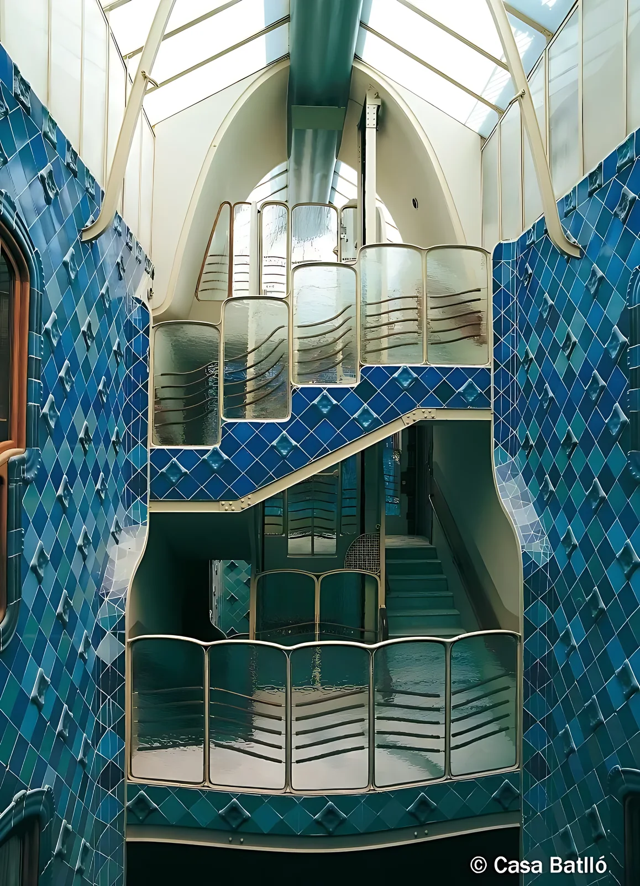
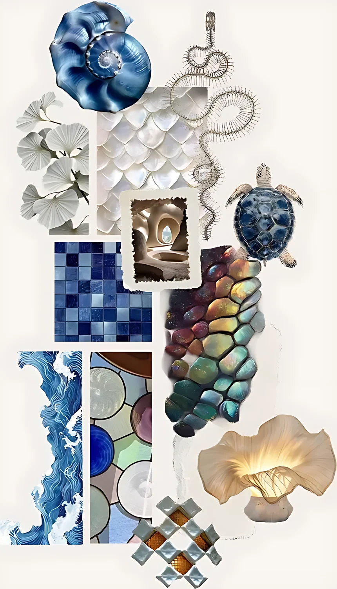
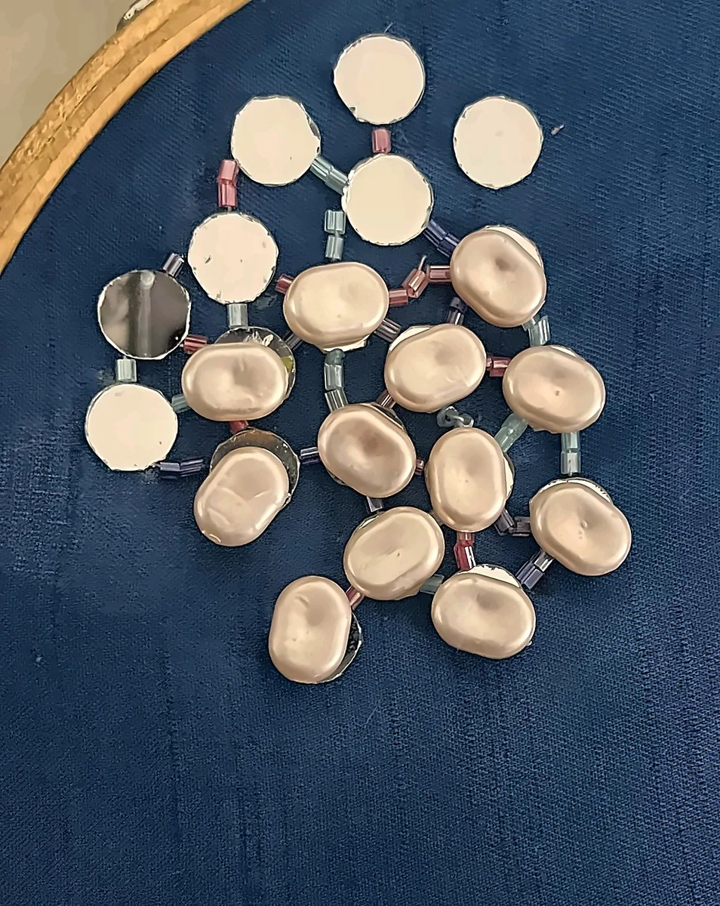
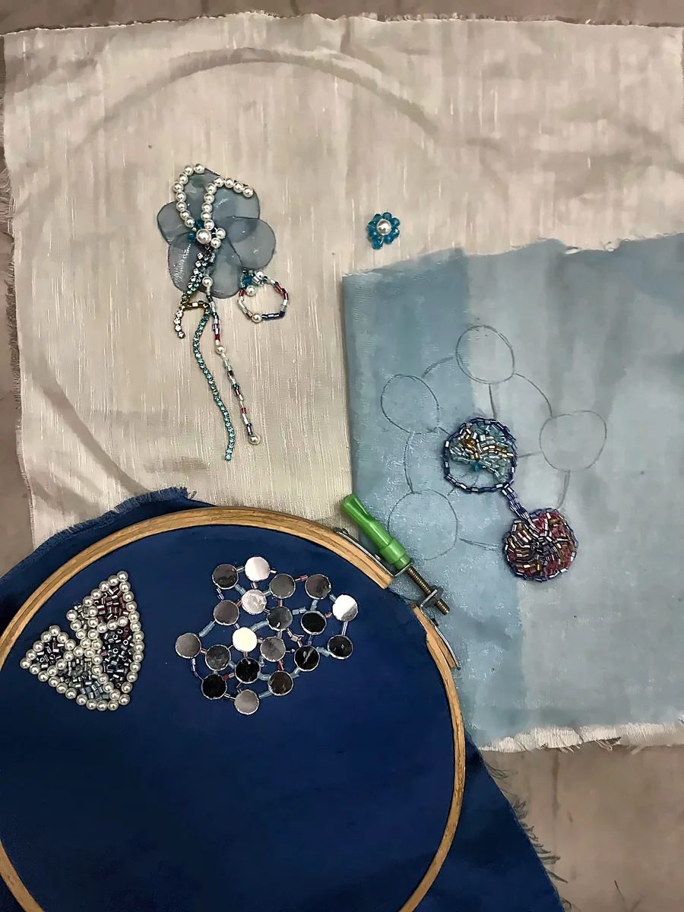
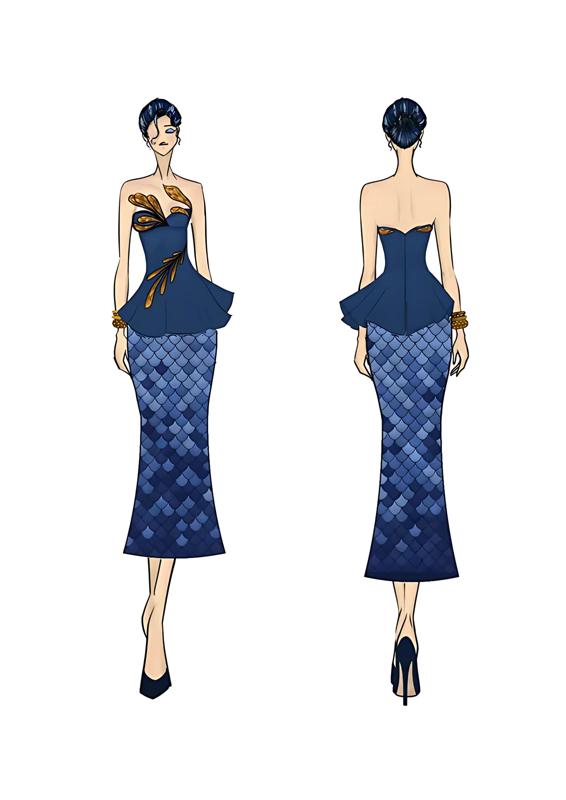

Design explorations · inspiration map
Eleven explorations
Each sketch, and the part of Casa Batlló behind each of its details. Stars mark the two that led to the final garments. Use the strip, or the arrow keys.
Casa Batlló, reimagined through fashion: two sculptural, soft-structured womenswear looks built from the details most visitors walk past.
The textile industrialist Josep Batlló paid for the house with cloth. Here it returns to cloth.
Souvenirs, prints, editorials and collections keep reusing the same few images: the trencadís façade, the mask balconies, the dragon roof. Translated literally, a building becomes a costume. Drag across the photo to move from what everyone sees to what they pass by.


What everyone seesWhat most people pass byHow can Casa Batlló's balconies, columns, roof scales, doors and stained glass, read for how they are built rather than how they are photographed, become a contemporary fashion language without copying the building?
Each stage ended in a graded review, and one rule ran through all four.
Group research on Gaudí, Art Nouveau, Catalan Modernisme and Casa Batlló; choosing an individual focus.
A detail inventory of the interior, reading each element for form, function, material and natural reference.
Principle-led translation of each detail into silhouette, construction and surface; sampling.
Toiles, prototypes, fittings and refinements; final looks, styling and documentation.
Translate principles, not pictures. A detail enters the collection only through what it does: how it meets a hand, filters light, carries load or moves air.
Gaudí remodelled an ordinary house between 1904 and 1906, working with the best craftsmen in iron, wood, glass, ceramic and stone, so almost nothing inside is standard. Scroll to climb from the entrance to the roof.
Gaudí lined the lightwell with blue tiles, darker at the top and lighter at the bottom, and made the windows smaller at the top and larger lower down, so daylight reaches every floor evenly. Scroll, and this section pales with it.


Architecture-inspired fashion responds almost entirely to the exterior: façade, dome, skyline, plan. Every documented Gaudí precedent works with mosaic colour and organic drape. Select a dot to read it.
Placement is my reading of the precedents studied in the report, not a measured scale.
What the research pointed to, before a single sketch.

Garments that hold a sculpted shape but follow the body, as Gaudí's rails and columns do: flowing water, delicate shells and underwater light, with curved ceilings, sculptural furniture and stained glass as anchors.
Curves never meet at a right angle; structure is visible; light passes through layers; detail rewards a second look.
Sampled on the real base fabrics, all within the cobalt-to-pearl palette. Turn a sample over to see the part of the house it comes from.


Each sketch, and the part of Casa Batlló behind each of its details. Stars mark the two that led to the final garments. Use the strip, or the arrow keys.
The five primary elements were divided between two final garments. Drag across each to watch the exploration become the final design.
Garment 02, finished and photographed for The Living Architecture editorial. Select a point to trace each detail back to the house.


Garment 01, The Dragon's Back, is shown on this page as its final illustration: overlapping roof scales in the lightwell's cobalt-to-pearl gradient.
The only Casa Batlló collection built from the details people overlook: every piece carries the story of a door, a handle, a rail or a pane of glass the wearer can feel.
The detail-to-garment matrix can be reused for any building: a transferable tool for architecture-led design.
Casa Reimagined · Vaishnavi Bhosale · 2026
Group research foundation with Anah Busheri, Riya Bagani, Vishakha Motwani and Vrunda Patel; the two garments and the interior study are my individual project. Photographs of Casa Batlló come from the group research boards and the sources credited in the report (© Casa Batlló where marked; Carlos Giordano Rodríguez & Nicolás Palmisano). Used for academic, non-commercial purposes.